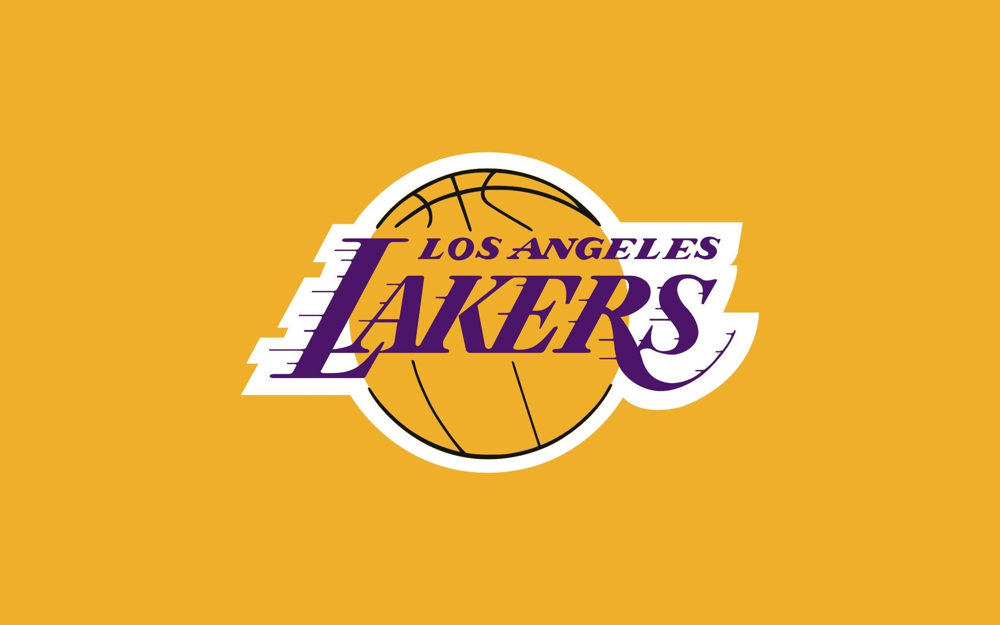
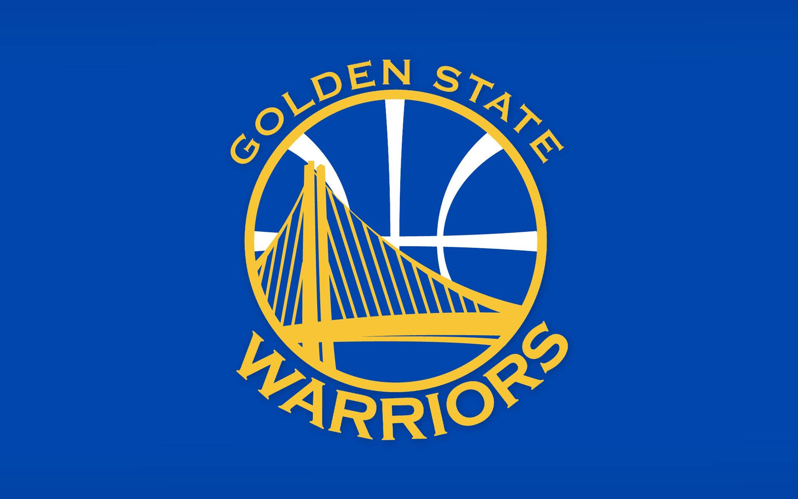
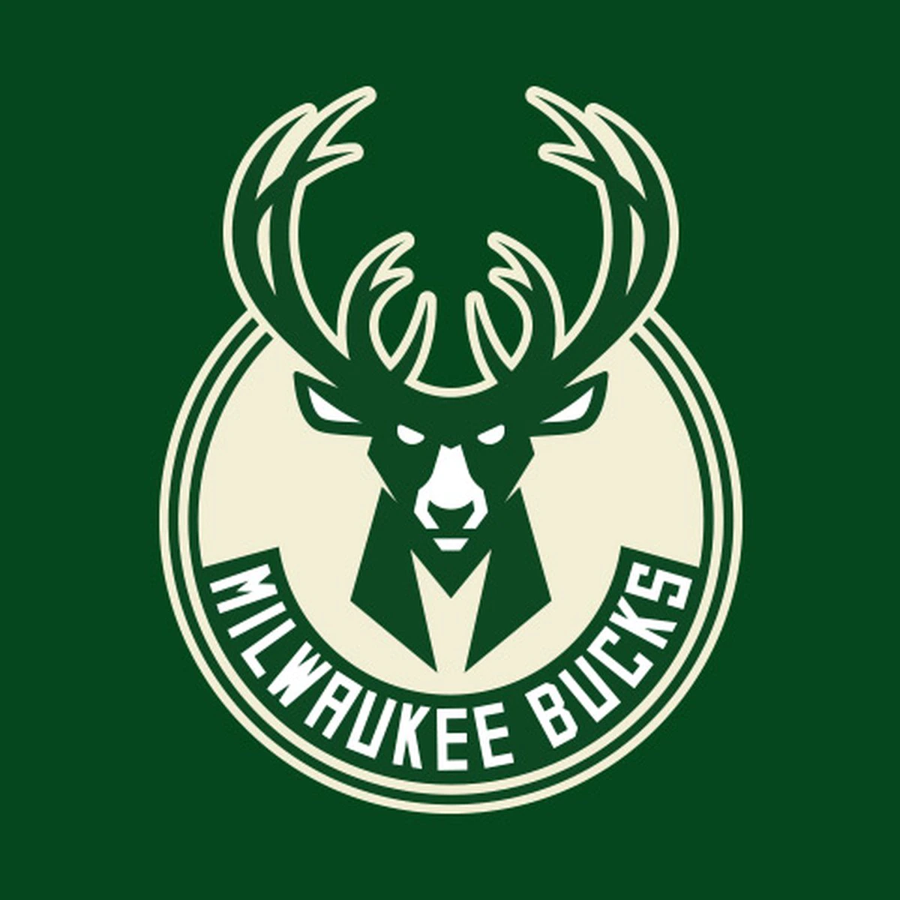
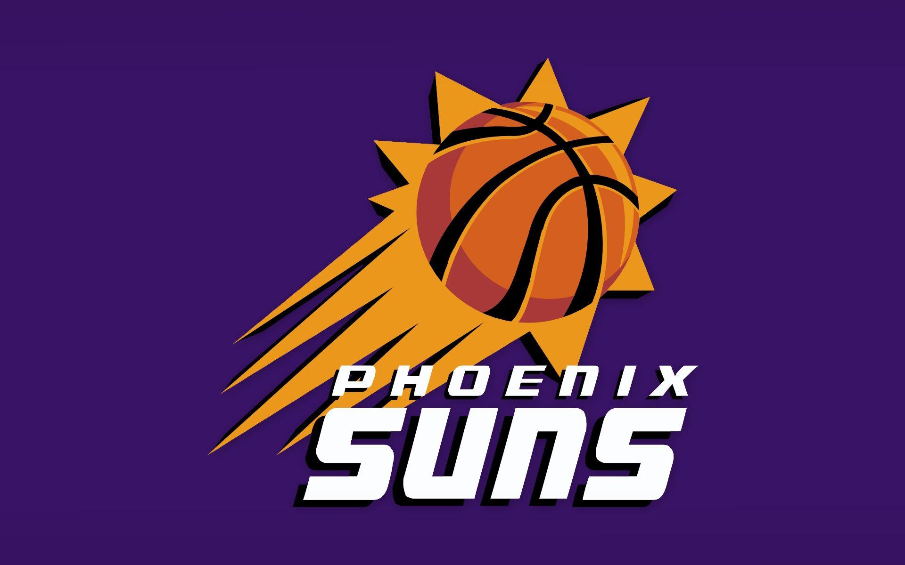

De Chicago Bulls zijn het derde NBA-team dat in Chicago speelt. Voorgangers waren de Chicago Packers/Zephyrs (nu spelend in Washington D.C. onder de naam Washington Wizards) en de Chicago Stags (1946-1950).
In het seizoen 1966/1967 kwam het team voor het eerst uit in de NBA, waarbij het zich meteen plaatste voor de play-offs. De glorietijd van de Bulls zou echter aanbreken vanaf 1984, toen ze in de draft Michael Jordan kozen. In zijn eerste seizoen brak hij al teamrecords en leidde hij de Bulls naar de play-offs. De echte hoogtepunten kwamen in de jaren 90, toen het team onder impuls van Jordan en succescoach Phil Jackson, versterkt werd met Jordan-dienende spelers, iets dat resulteerde in de zes titels. In Scottie Pippen kenden de Bulls een andere speler van grote individuele klasse. Behalve de finalewedstrijden, waren de (vaak halve finale) wedstrijden tegen aartsrivaal de New York Knicks, onder aanvoering van Patrick Ewing, enerverend te noemen.

Los Angeles Lakers
De Los Angeles Lakers is een basketbalploeg uit de NBA, die als thuisbasis Los Angeles heeft. De Lakers zijn historisch een van de meest succesvolle ploegen van de NBA. Ze hebben het hoogste aantal finaleplaatsen (32) en alleen de Boston Celtics wonnen de NBA-titel even vaak (17).De Lakers hebben ook het record van de meeste opeenvolgende overwinningen in één seizoen, namelijk 33. Verder staat de club bekend om het grote aantal sterren dat voor de club speelde, waaronder Jerry West, Wilt Chamberlain, Kareem Abdul-Jabbar, Magic Johnson, Shaquille O'Neal, Kobe Bryant en LeBron James.

Golden State Warriors
De Golden State Warriors is een Amerikaans professioneel basketbalteam gevestigd in San Francisco. De Warriors nemen deel aan de National Basketball Association (NBA), als lid van de Western Conference Pacific Division van de liga. De Warriors, opgericht in 1946 in Philadelphia, verhuisden in 1962 naar de San Francisco Bay Area en namen de naam van de stad aan, voordat ze de geografische naam in 1971 veranderden in Golden State. [a][b] De club speelt haar thuiswedstrijden in het Chase Center .

Milwaukee Bucks
De Milwaukee Bucks is een professioneel basketbalteam uit Milwaukee, Wisconsin. Ze spelen in de Central Division van de Eastern Conference in de NBA. Het thuishonk van de Bucks is het Fiserv Forum. Tot 1955 zaten de Hawks in Milwaukee, tot de stad in 1968 terug in de NBA kwam met de Milwaukee Bucks.

Pheonix Suns
De Phoenix Suns is een basketbalteam uit Phoenix, Arizona. Ze spelen in de NBA (Pacific Division, Western Conference). Het thuishonk van de Suns is de Phoenix Suns Arena.
In het seizoen 2020/2021 nemen de Suns voor het eerst in 11 jaar weer deel aan de Play-off’s. Het laatste post season optreden dateert uit 2010, toen de Western Conference Finals werden verloren van de Los Angeles Lakers.